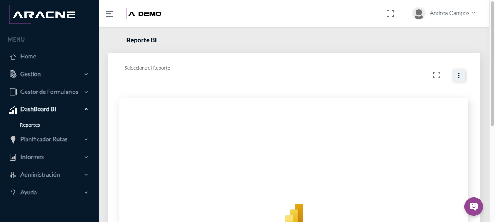
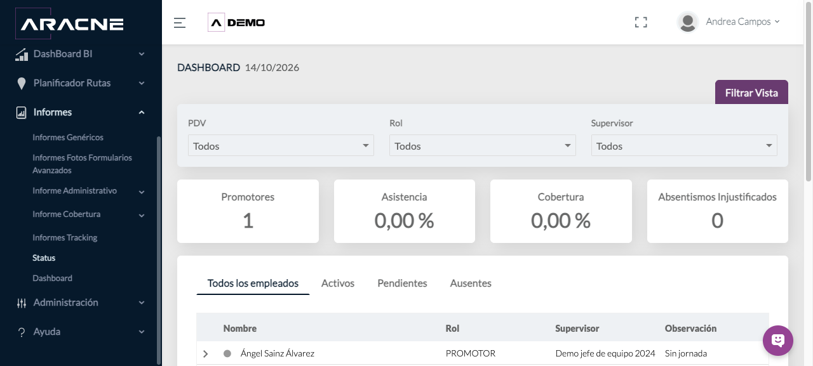

Consulta
DashBoard BI, Status y Dashboard
Consultar indicadores operativos y vistas resumidas de actividad.
Requisitos
Datos de campaña cargados y permisos de consulta.
Dónde estáDashBoard BI o Informes › Status / Dashboard
Procedimiento
- En DashBoard BI, selecciona el reporte disponible.

Paso 1. Selección de reportes en DashBoard BI. - En Status, aplica filtros de PDV, rol y supervisor; alterna entre empleados según su estado.

Paso 2. Filtros y estados de empleados. - En Dashboard, filtra por rol, cadena, canal, categoría y regional.

Paso 3. Filtros, indicadores y gráficos del Dashboard. - Revisa asistencia, cobertura, absentismo, usuarios y promotores.
Paso 4. Filtros, indicadores y gráficos del Dashboard. - Expande los gráficos cuando necesites el detalle.
Paso 5. Filtros, indicadores y gráficos del Dashboard.
Campos y controles
- Filtros: acotan el universo del indicador.
- Asistencia y cobertura: proporciones del periodo mostrado.
- PDV programados y visitados: recuentos de actividad.
- Ausencias justificadas e injustificadas: incidencias del día.
Resultado esperado
Los indicadores se actualizan al ámbito elegido.
Cómo comprobarlo
Confirma los filtros activos y contrasta los recuentos con el detalle disponible.
Problemas habituales
- Si un indicador queda a cero, revisa fecha y filtros antes de interpretar el resultado.
- Si un usuario aparece sin jornada, consulta Gestión de Fichajes.
Operaciones relacionadas
Gestión de FichajesPlanificador de rutasTracking